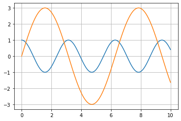

Codebraid – live code in Pandoc Markdown
Create dynamic documents by executing code blocks and inline code in Pandoc Markdown.
- Execute code with Jupyter kernels or with the extensible built-in execution system.
- Display Jupyter rich output like plots and LaTeX math in both block and inline contexts.
- Write pure Pandoc Markdown—no custom syntax or separate preprocessing stage.
- Mix languages freely—use multiple language kernels within the same document and multiple independent sessions per kernel.
- Customize the display of code output—easily modify what is displayed, and display it anywhere in the document using literate programming capabilities.
- Preview documents in VS Code or VSCodium with a dedicated extension supporting scroll sync.
---
codebraid:
jupyter: true
---
## Jupyter demo
An example with Matplotlib:
```{.python .cb-nb}
%matplotlib inline
import matplotlib.pyplot as plt
import numpy as np
x = np.linspace(0, 10, 1001)
plt.plot(x, np.cos(2*x))
plt.plot(x, 3*np.sin(x))
plt.grid()
```
Jupyter demo
An example with Matplotlib:
%matplotlib inline
import matplotlib.pyplot as plt
import numpy as np
x = np.linspace(0, 10, 1001)
plt.plot(x, np.cos(2*x))
plt.plot(x, 3*np.sin(x))
plt.grid()
Example documents
The documents below demonstrate Codebraid capabilities. For more advanced features, see the end of the Python and Rust examples.
- Python example [Pandoc Markdown source] [raw HTML output]
- Jupyter example [Pandoc Markdown source] [raw HTML output]
- Rust example [Pandoc Markdown source] [raw HTML output]
- Julia example [Pandoc Markdown source] [raw HTML output]
- R example [Pandoc Markdown source] [raw HTML output]
- Bash example [Pandoc Markdown source] [raw HTML output]
- JavaScript example [Pandoc Markdown source] [raw HTML output]
Publications
-
“Codebraid: Live Code in Pandoc Markdown”, Geoffrey M. Poore, Proceedings of the 18th Python in Science Conference, 2019, 54-61.
-
“Codebraid Preview for VS Code: Pandoc Markdown Preview with Jupyter Kernels”, Geoffrey M. Poore, Proceedings of the 21st Python in Science Conference, 2022, 105-109.
External resources
The new Codebraid website is currently under development.
- For additional Codebraid documentation, see the README.
- For additional Codebraid Preview documentation, see the README or the presentation for SciPy 2022.